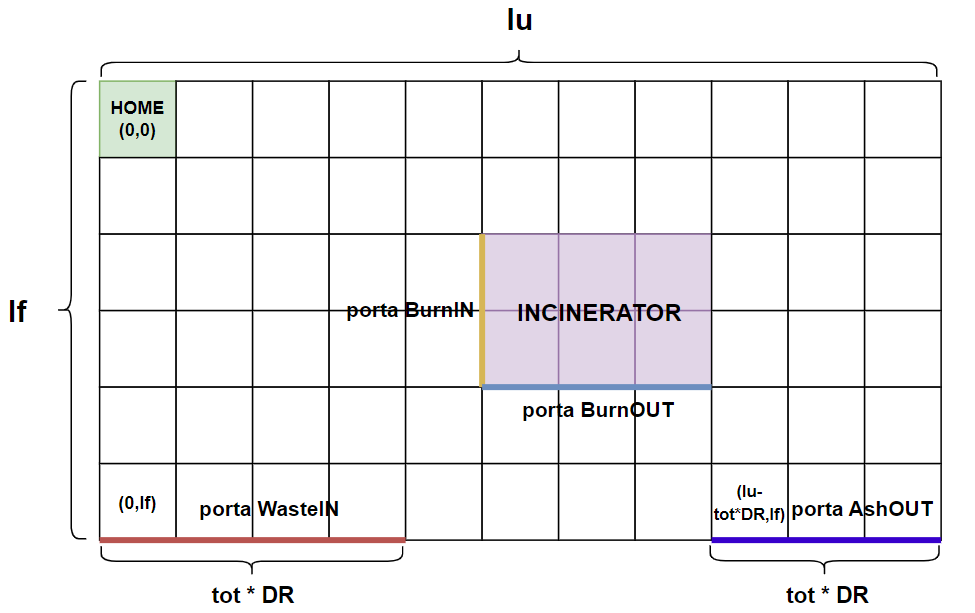
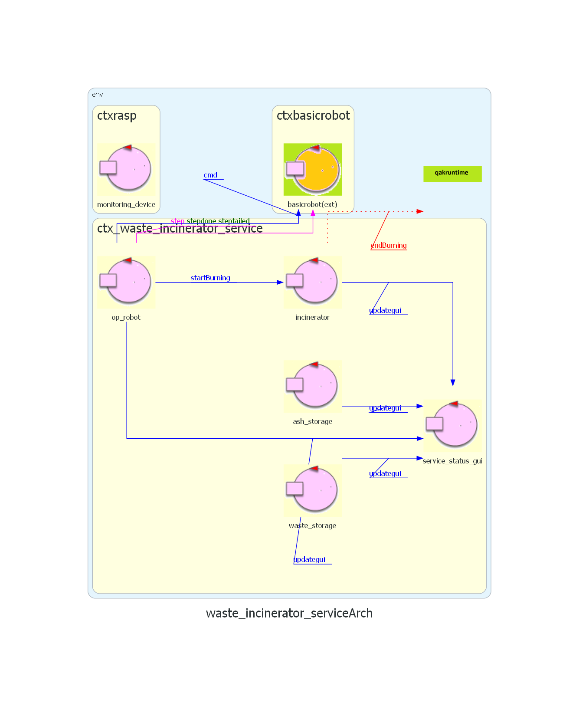

Introduzione
Un'azienda intende realizzare un WasteIncineratorService per trattare i rifiuti bruciandoli e necessita di un servizio di sistema software (WIS) che controlli un robot (chiamato OpRobot) per spostare i rifiuti.
Requisiti
Il seguente link porta al documento dei requisiti fornito dal cliente.
Documento requisiti
Analisi dei requisiti
Parte strutturale
In questa prima parte dell'analisi dei requisiti, andiamo a modellare i componenti della parte "strutturale" dell'edificio.
La Service Area è uno spazio piano Euclideo delimitato da bordi.
L'area è vista come un sistema di coordinate che parte dal punto in alto a sinistra, indicato come (0,0).
La coordinata X(ascisse) cresce verso destra, mentre la coordinata Y(ordinata) cresce verso il basso.

Il Bordo perimetrale ha lunghezza
lf+ld+lr+lu.Poichè la stanza è rettangolare, si ha
lf==lr && ld==lu
DR=2R, essendoRil raggio del cerchio in cui può essere racchiuso il Robot
Lo Stato iniziale del OpRobot è l’angolo superiore sinistro, detto Home.
Incinerator è modellato come un rettangolo all'interno della Service Area, dotato quindi di quattro coordinate che rappresentano i suoi vertici.
Esso è dotato di due porte (BurnIN e BurnOUT) che vengono mappate rispettivamente come lato sinistro e lato basso del rettangolo Incinerator.
Inoltre, Incinerator è dotato di un proprio comportamento, in quanto deve poter essere attivato da remoto e comunicare al OpRobot e al sistema quando è terminata
la fase di burning.
La porta di WasteIN viene modellata come un segmento (non ha area in quanto è una porta che da verso l'esterno della Service Area) che parte dalle coordinate (0, lf) e ha una lunghezza di tot unità robotiche (tot * DR) non specificate nei requisiti.
La porta di AshOUT viene modellata come un segmento (non ha area in quanto è una porta che da verso l'esterno della Service Area) che parte dalle coordinate (lu - tot*dr, lf) e ha una lunghezza di tot unità robotiche (tot * DR) non specificate nei requisiti.
Di seguito un'immagine che riassume la locazione dei componenti nella Service Area: (il posizionamento e la dimensione del Incinerator e la dimensione delle porte WasteIN e AshOUT sono solo indicative)

{kind=link}
Il contenitore WasteStorage è esterno alla ServiceArea, quindi non necessita di coordinate per essere mappato.
La capacità massima del container non è specificata nei requisiti, quindi in questa prima fase si considera "illimitata".
La bilancia Scale di cui è dotato il WasteStorage viene inglobata all'interno di quest'ultimo in quanto l'unico compito della bilancia è
misurare il peso totale dei Roll Packets attualmente presenti nel container.
Il contenitore AshStorage è esterno alla ServiceArea, quindi non necessita di coordinate per essere mappato.
La capacità del container è fissata alla cenere di circa 3 o 4 Roll Packets.
Il MonitoringDevice è esterno alla ServiceArea, quindi non necessita di coordinate per essere mappato.
Esso è composto da un Sonar e da un Led che lavorano su un RaspberryPi.
Formalizzazione dei componenti
I componenti descritti nella sezione precedente vengono rappresentati formalmente come POJO o come Attori. Andiamo a discuterne la scelta per ciascuno di essi:
- Incinerator: Attore, in quanto deve poter scambiare informazioni con il sistema e con l'OpRobot. Esso è dotato di uno stato (0 = non sta bruciando, 1 = sta bruciando).
- WasteStorage container: Attore, in quanto è un componente attivo e "osservabile" dal sistema.
Esso è dotato dei seguenti attributi: Capacità massima e Peso totale attuale.
Il peso totale viene misurato dalla Scale, quindi potrebbe essere sensato definire quest'ultima come un POJO (e il peso come un suo attributo) inglobato all'interno dell'attore WasteStorage.
Demandiamo questa scelta nella fase di analisi del problema e per il modello dei requisiti mantieniamo il peso come attributo del WasteStorage. - AshStorage container: Attore, in quanto è un componente attivo e "osservabile" dal sistema.
Esso è dotato dei seguenti attributi: Capacità massima e Capienza attuale. (espressi in numero di RP)
La capienza attuale viene monitorata dal MonitoringDevice attraverso il Sonar di cui è dotato, per cui si potrebbe pensare di rimuovere tale attributo dal AshStorage.
Demandiamo questa scelta nella fase di analisi del problema e per il modello dei requisiti manteniamo la capienza come attributo del AshStorage. - MonitoringDevice: Attore, in quanto è un componente attivo e deve poter osservare lo stato del Incinerator e del AshStorage.
Nel modello dei requisiti non ci preoccupiamo della sua architettura (Sonar + Led), ma lo consideriamo come un singolo componente.
Infine, andiamo a discutere la rappresentazione del OpRobot e della ServiceStatusGUI.
Nel nostro modello dei requisiti, modelliamo il robot come un'entità astratta BasicRobot che quindi non dipenderà dallo specifico robot fisico (DDR Robot) che ci fornirà il committente.
I messaggi che l'attore OpRobot invierà al BasicRobot sono in linguaggio aril e definiscono delle mosse elementari per muovere il robot nella stanza. OpRobot quindi incapsula la logica di movimento del robot, mentre BasicRobot è solo un semplice esecutore dei movimenti.
La ServiceStatusGUI viene rappresentata come un Attore in quanto deve poter osservare lo stato del sistema ed essere aggiornata da quest'ultimo.
Architettura dei requisiti
Definiamo ora un modello che descrive come i componenti elencati in precedenza interagiscono tra loro.

Il messaggio startBurning è il comando di attivazione che viene impartito all'Incinerator e già dai requisiti si evince che è di tipo Dispatch in quanto non necessita di una risposta.
Nei requisiti non viene specificato quale entità abbia il compito di impartire tale comando. Per il momento supponiamo che sia esclusivamente compito del WIS farlo.
La notifica che la fase di burning è terminata, viene modellata come un messaggio endBurning di tipo Event (deducibile dal testo) osservabile dal OpRobot e dal WIS.
Il messaggio todocmd viene introdotto per permettere al WIS di impartire comandi al OpRobot (come richiesto dai requisiti).
Nella fase di analisi del problema, si andrà poi a discutere su chi abbia effettivamente la responsabilità di muovere l'OpRobot (se il wis o l'OpRobot stesso)
I messaggi cmd e step sono rispettivamente di tipo Dispatch e Request e vengono inviati dal OpRobot per impartire comandi al BasicRobot.
Il messaggio generale updategui viene inviato dai vari componenti per notificare la ServiceStatusGUI delle modifiche al sistema.
Questo comportamento si potrebbe modellare attraverso il pattern Observer, rendendo i vari componenti osservabili dalla GUI (e quindi mappare le informazioni di interesse come Eventi), ma tale possibile implementazione verrà discussa nelle fasi sucessive.
Notiamo come il sistema è distribuito su almeno tre nodi computazionali differenti.
Si dovranno sviluppare i macro-componenti:
{kind=link}
- wis
- monitoring_device
- op_robot
- incinerator
- ash_storage
- waste_storage
- service_status_gui
Test plans
- test activate incinerator: quando viene mandato il segnale di attivazione l'inceneritore inizia a bruciare
- test end burning: quando l'inceneritore finisce di bruciare il robot passa a raccogliere la cenere
- test ash storage full: se l'ash storage pieno si rimane in attesa
- test waste storage not empty: se il waste storage non è vuoto il robot deve prelevare un RP